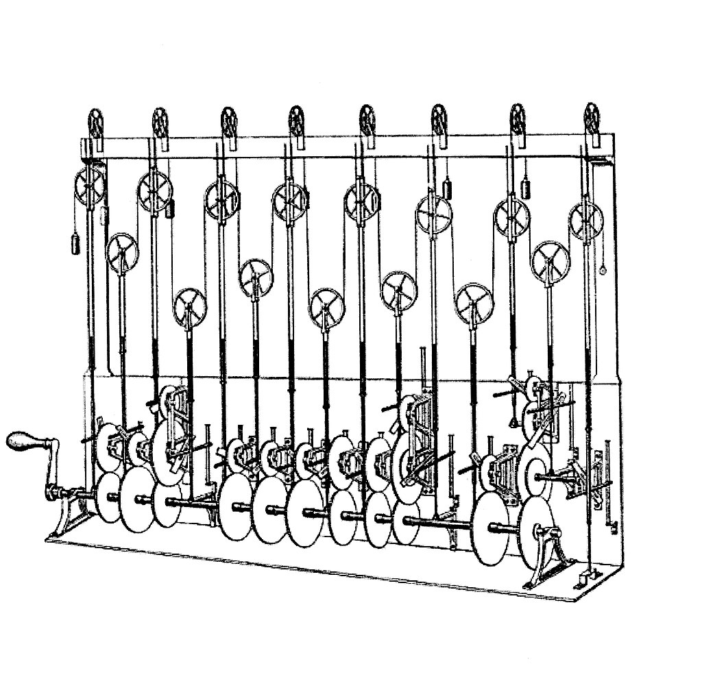
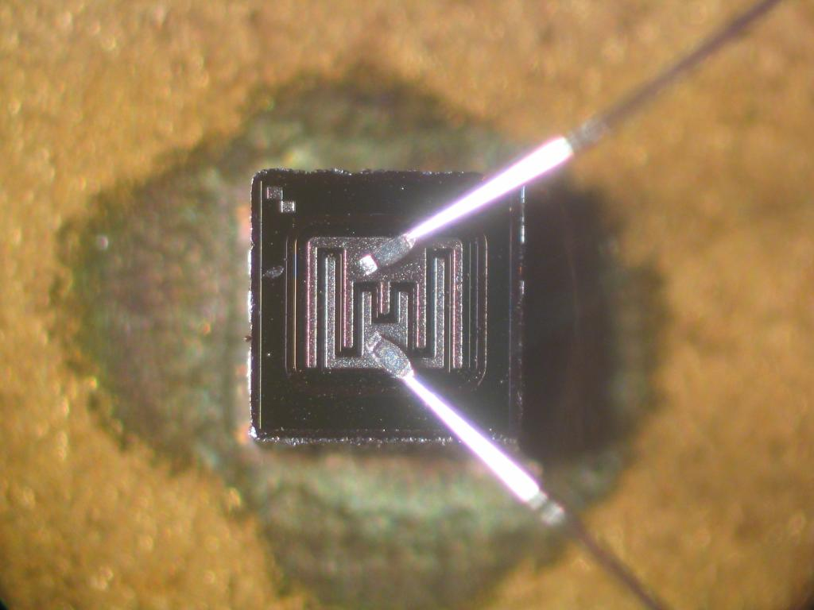
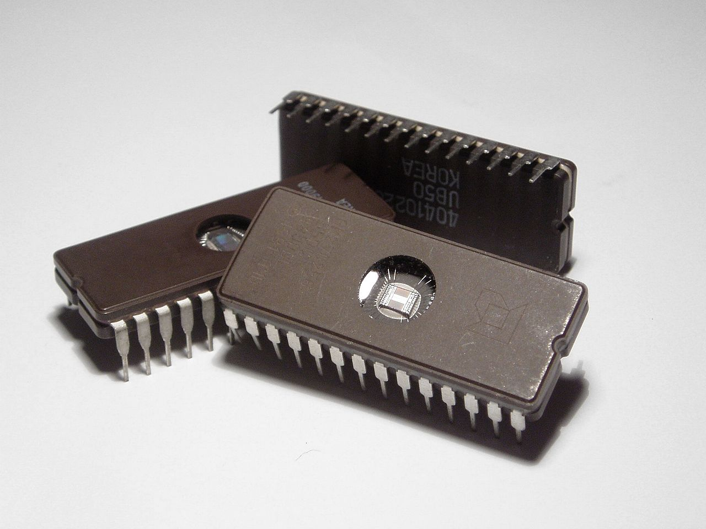

Tech: Now and Then

7 June 2021

The ENAIC, the first large-scale electronic computer ever developed in the US.
Computers are incredibly important devices that we all use each day. In fact, you're most likely using one right now to view this. They aid us in everyday tasks, from being able to call someone far away with little to no issue, being able to type out important documents and share them to anyone across the world, and possibly even typing up a website to talk about the history of things. But, where did computers come from? What could they do compared to what we can do now? And how fast have computers been evolving? Well, there's many, many examples of basic, non-electronic "computers" far before electricity was even a concept.
The first known use of the word "computer" was used in a book in 1613 titled "The Yong Mans Gleanings" written by Richard Braithwait. The term referred to a human computer, which is someone who carried out calculations/arithmetic. The word continued to have this meaning until the middle of the 20th century when ENAIC, the first large-scale computer, was created. During this period, women were mostly hired as computers due to them being paid less.

An abacus, which is considered to be an ancestor of the computer due to it keeping track of math.
Devices have been used throughout the ages to keep track of calculations and computations throughout history, as the human mind is flawed and can often forget things. The earliest counting device was likely a form of a tally stick, with things like clay spheres, cones, etc. being used to count items like livestock or grains. The abacus is also in a similar boat, as it was used to calculate arithmetic too complicated to do by hand. The Roman abacus was developed from devices used in Babylonia as early as 2400 BCE. Another device would be the Antikythera mechanism, which is considered to be the earliest mechanical analog computer, with it calculating astrological positions, and it was built around 100 BCE. Technology like this would not reappear until around 1000 years later. The astrolobe was created around the same time as the Antikythera, but it had a mechanical calendar and gear-wheels added to it by Abi Bakr in 1235 CE, making it more autonomous. The next major advancement was done by Pierre Jaquet-Droz, who built a mechanical doll that could write holding a quill pen. By switching around gears, the doll could write different words, making it essentially a computer due to it being programmable.
The first computing device was created by Charles Babbage, who was an English polymath that scoped out the design of a device that could solve equations. In 1833, he created an analytic engine that was able to read instructions off of punch cards, which was also used to direct mechanical looms. The machine would have a printer, curve plotter, and bell to ring once it was done. The Engine incorporated an arithmetic logic unit, control flow in the form of branching and loops. and integrated memory, which means it would possibly be described as Turing-complete. Unfortunately, the device was never created due to the massive scale it would need to be as well as the device having all of its thousands of parts made by hand. His son, Henry Babbage, was able to build a simplified version of it in 1888.
This is an illustration of Sir William Thomson's tide-predicting machine, which would be able to tell how strong a tide was at a particular location through its pulleys and wires.
During the first half of the 20th century, many scientific computing needs were met with increasingly sophisticated analog computers, which used direct mechanical or electrical models of the problem to calculate them. These computers were often non-programmable though, as they were simple machines without much processing being done in them. The first modern analog computer was the tide-predicting machine by Sir William Thomson, with his bother James Thomson creating a differential analyzer that could solve differential equations using a system of wheels and discs. A later version of it created by H.L. Hazen and Vannevar Bush in 1927 that much better, but by the 1950's they had been pretty much forgotten.
The first digital computer could be the United States Navy's electromechanical analog computer that could fit in a submarine in 1938, which was called the Torpedo Data Computer. It used trigonometry to solve the problem of firing a torpedo at a moving target, which other countries copied during WWII. The next advancement was done just one year later with German engineer Konrad Zuse creating the Z2, which was an electromechanical relay computer. This type of computer relied on electric switches driving mechanical relays through vacuum tubes. It was slow due to this, so just 2 years later he created the Z3, which was a fully automatic, programmable, and digital. The Z3 had 2000 relays, which would go at about 5-10 Hz. For context, the average processor nowadays is around 2-4 GHz, which is about 1,000,000 times stronger. The computer itself was not a universal computer, but could be extended to be Turing complete.

This is the Colossus, a set of computers developed by British codebreakers to break through the ciphers Nazis were using.
Purely electronic circuit elements soon replaced their mechanical and electromechanical equivalents, with Tommy Flowers exploring the use of electronics for telephone exchange. Part of the telephone exchange was converted into his experimental data processing system, which used thousands of vacuum tubes. Just 4 years later, he was tasked with helping the British military decrypt the messages sent by Nazis through their Enigma encoders. After a functional test in December 1943, Colossus was shipped to Bletchley Park, where it was delivered on 18, January 1944 and attacked its first message on the 4th of February. The Colossus was the world's first electronic digital programmable computer. It had a paper-tape input that could perform a variety of boolean logical operations of its data, but the machine itself was not Turing-complete. The ENAIC was the first electronic progammable computer that was built in the U.S. Although the ENAIC was similar to the Colossus, it was much faster, flexible, and Turing-complete. A program on the machine was the states of its patch cables and switches, which meant that a program had to be mechanically set into the machine with the manual resetting of those. The programmers of the ENIAC were six women, who were known collectively as the "ENIAC girls". The machine could add or subtract 5000 times a second, with the ability to multiply, divide, and square root also built in. High speed memory was limited to 80 bytes, or around 20 words. The machine was started in 1943, but wasn't fully finished until 1945 by John Mauchly and J. Presper Eckert.
The concept of the modern computer was proposed by Alan Turing. Turing proposed a simple device that he called "Universal Computing Machine", which is nowadays known as the universal Turing machine. He proved that the machine is capable of computing anything that is computable by executing programs, which allowed the machine to be programmable. The fundamental concept of Turing's design is the stored progam, which stores all the instructions of a computer into its memory. This is the central idea for modern computers. This idea was tough to carry out due to most early machines requiring an entire re-wiring and re-structuring of the thing itself to be able to do something else, but the Manchester Baby was the first machine to break from this. The machine was the world's first stored-program computer, with it being built at the University of Manchester by Frederic C. Williams, Tom Kilburn, and Geoff Tootill. The machine ran its first program on the 21st of June, 1948, which was also the testbed for the Williams tube, the first random-access storage device. Grace Hopper was then the first person to develop a compiler for programming language for the device.
This is the Bipolar Junction Transistor, a transistor that used both electrons and electron holes to carry charges across things.
The concept of a field-effect transistor was proposed by Julius Edgar Liliendfeld in 1925. John Bardeen and Walter Brattain, working under William Shockley, built the first working transistor, the point-contact transistor, in 1947, which was followed by the bipolar junction transistor in 1948. From 1955 onward, transistors replaced vacuum tubes in computers which gave rise to the second generation of computers. Compared to vacuum tubes, they're much smaller, require less power, and give off less heat. Junction transistors were much more reliable than the average vacuum tube, as they have almost indefinite service life. Although, transistors were much larger back then than they are nowadays. They were also difficult to manufacture due to their size. The first transistorised computer was developed by the Atomic Energy Research Establishment in Harwell, UK, with it then being passed up by the creation of the MOSFET (metal-oxide-silicon field-effect transistor) by Bell Labs in 1959. It was the first truly compact transistor that could be put in many things due to its incredibly small size. The MOSFET was the first thing to pioneer the microcomputer revolution, as well as the driving force behind the computer evolution. It's also considered the building block of digital electronics, as it's still widely used today.
This is an EPROM, or Erasable programmable read-only memory integrated circuit. These packages have a transparent window that shows the "die" inside.
The next major advancement was made with the invention of the integrated circuit. The idea of it was first conceived by a radar scientist working for the Royal Radar Establishment of the Ministry of Defence, Geoffrey W.A. Dummer. He presented the first public description of the device at the Symposium on Progress in Quality Electronic Components in Washington, D.C. on the 7th of May, 1952. The first working ICs were invented by Jack Kilby at Texas Instruments. Kilby recorded his initial ideas concerning the integrated circuit in July 1958, successfully demonstrating the first working integrated circuit. Unfortunately, his invention was a hybrid integrated circuit instead of a monolithic integrated circuit (essentially a circuit made of several devices instead of just one device). Robert Noyce was the first person who made a monolithic integrated circuit, and it was much easier to produce due to a better material (silicon vs germanium). Modern MICs are mostly metal-oxide semiconductors, which most often are built from MOSFETs. The earliest MOS IC was a 16-transistor chip built by Fred Heiman and Steven Hofstein at RCA in 1962, with General Microelectronics introducing the first commercial MOS IC in 1964. This device then led to the invention of the microprocessor, which heralded an explosion into the commercial and personal use of computers. The first microprocessor was the Intel 4004, which was designed by Federico Faggin and Ted Goff, Masatoshi Shima and Stanley Mazor at Intel. In the early 1970's, MOS IC technology allowed the integration of more than 10,000 transistors on a single chip.
The first mobile computers were heavy and ran from mains power. The 50 pound IBM 5100 is a good early example. Later portables such as the Osborne 1 and Compaq Portable were considerably lighter but still needed AC power. The first laptops, such as the Grid Compass, removed this by requiring batteries, and with the continuing miniaturization of computing resources and advancements in portable battery life, portable computers grew in popularity in the 2000's. The same developments allowed manufacturers to integrate computing resources into cellular phones by the early 2000's. These smartphones run on a variety of operating systems and recently became the dominant computing device on the market. These are powered by System on a Chip devices, which are complete computers on a microchip the size of a coin.